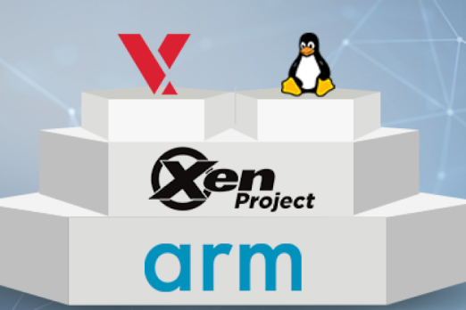
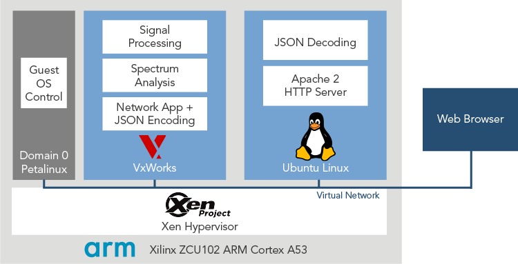
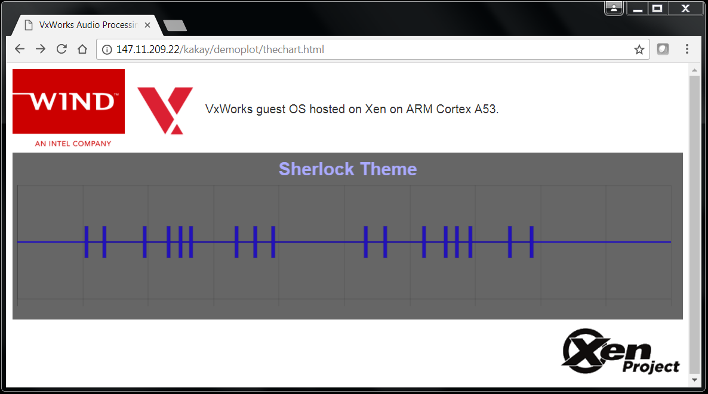

Configuring and setting up the VSB and VIP is known as platform development.
VxWorks on Xen on ARM Cortex A53

Blog Information
- 12th December 2017
- Wind River Systems U.K. Ltd
- Ka Kay Achacoso
Overview
VxWorks real-time operating system (RTOS) is a small deterministic operating system known for its security, reliability, and robustness. Linux, an open-source operating system, can host a rich set of server technologies. By running VxWorks and Linux side by side on the same system, a device can use VxWorks to manage mission-critical functions, and use Linux to manage human-interactive functions and network cloud connection functions.
VxWorks has been running alongside Linux for years now over several virtualization technologies. Wind River Virtualization Profile includes a hypervisor that can host Linux, Windows, and other OSes alongside VxWorks as guest OSes. On Intel architectures, VxWorks can run unmodified on KVM, VMware, Oracle Virtual Box, and the Xen Project Hypervisor.
On ARM Cortex A53, beyond the Wind River Virtualization Profile, the latest hypervisor to host VxWorks alongside with Linux is the Xen Project Hypervisor, an open-source virtualization platform from the Linux Foundation. DornerWorks enables the Xen Project Hypervisor to run on the Xilinx Zynq UltraScale+ MPSoC in their release of Virtuosity (formerly Xen Zynq Distribution). Wind River has partnered with DornerWorks to provide a Xen Project Hypervisor solution for VxWorks and Linux on the Xilinx Zynq ZCU102 evaluation board.
With VxWorks and Linux running on the same system, developers can create hybrid devices like one that can collect sensor data, process the data, and then host a web server for small data visualization. As a quick experiment with the new Xen solution on ARM Cortex A53, I use a simple example of VxWorks processing audio input to detect hand-clapping rhythms, and Ubuntu hosting a web server that displays the rhythms detected.
Figure 1:Device example: A hand-clapping rhythm is analyzed by the device. Analysis results are available via a web server on the device.
Software Structure
The DornerWorks Xen solution runs Xilinx Petalinux as the domain 0 guest OS that serves as a launching point for all other guest OSes, which are called domains in Xen terms. Thus, when Xen first boots up, Petalinux starts up right away. From the Petalinux shell, I launch the VxWorks and Ubuntu guest OSes.
Xen provides a virtual network to its guest OSes that bridge to the physical network interface and out to external networks. Both VxWorks and Ubuntu have drivers that connect to the virtual network. VxWorks and Ubuntu communicate with each other over this virtual network, and connect to external networks through the bridged connection.
In this example, VxWorks runs signal processing and spectrum analysis applications. The results are compiled into a JSON string and sent through the virtual network to Ubuntu. On Ubuntu, the Apache2 HTTP server sends results to a browser using Node.js and Chart.js to format the data display.
Figure 2:Software block diagram of VxWorks and Linux guest OSes running on Xen.
Development Process
Virtuosity, which is Xen for Xilinx Zynq UltraScale+, is easily downloaded from DornerWorks website. The instructions to boot up the Xilinx Zynq board into Xen and its domain 0 Petalinux are well documented in the manual downloaded from the same page.
Virtuosity comes with an Ubuntu 14.04 LTS distribution that can run as a guest OS, and the documentation describes how to start up this guest OS. The default Xen domain configuration file is then modified for Ubuntu to increase its memory in order to install the extra software components onto Ubuntu.
VxWorks guest OS runs on top of the downloaded unmodified Virtuosity. To create the guest OS, we use the VxWorks board support package for Virtuosity available in VxWorks Core or VxWorks Plus. The process is pretty much the same as creating a VxWorks OS binary image for any other hardware. Once the VxWorks guest OS binary image is copied into the domain 0 Petalinux file system and a simple VxWorks-Xen domain configuration file is created, VxWorks guest OS is easily launched from the shell.
Results
The end result of this simplified experimentation demonstrates VxWorks as a real-time sensor application and Ubuntu Linux as a server application, with communication between the two running over virtual network. When hands clap a certain rhythm, the browser connected to the device displays the clapping rhythm. Figure 3 shows the clapping rhythm of the theme song for popular British television series Sherlock.
Figure 3:Web page served by Ubuntu HTTP server displaying the rhythm of the Sherlock theme as detected by VxWorks.
With Xen as an additional virtualisation option for VxWorks, device developers using ARM Cortex A53 based hardware can take advantage of the deterministic real-time properties of VxWorks and the human interface and networking capabilities of Linux.
Additional information about VxWorks is available here. For Virtuosity, see DornerWorks. Xen hypervisor information is available at the Xen Project website.